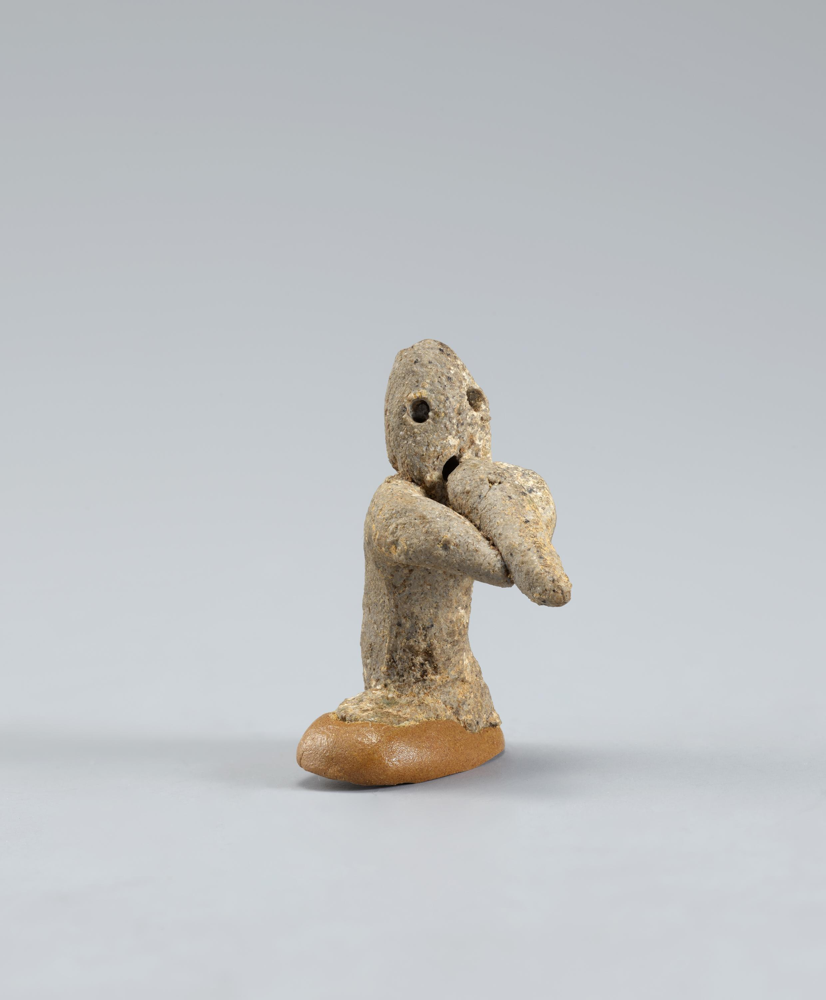

K 760 · 사람모양 토우
"무슨 이야기를 하고 있을까?"
사진에는 얼굴 앞쪽으로 두 손을 가져온 모습이 보입니다. 손과 입 주변의 형태를 천천히 살펴보세요. 말하거나 노래하는 모습처럼 느껴질 수도 있지만, 그 장면을 특정하는 설명은 확인 자료에 없습니다.
이 문장은 사진을 보고 관람자가 떠올릴 수 있는 질문입니다. 유물의 명칭이나 당시 사람의 실제 말로 전해지는 문구가 아닙니다.
출토지: 개별 기록 미확인 · 사진: 참고글에 수록된 e뮤지엄 이미지